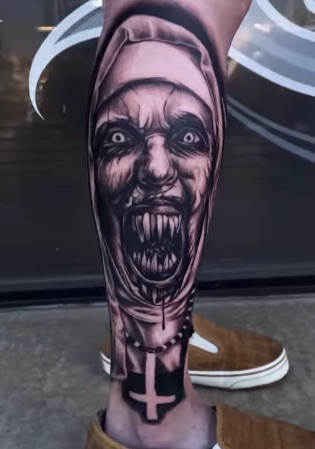
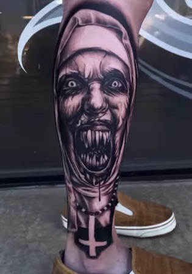

One of My Favorite Cover-Ups
My client came to me dissatisfied with his current work. He had an unfinished Foodog and his ex-girlfriend's name. After my services, my client left with his dream tattoo.

My client came to me dissatisfied with his current work. He had an unfinished Foodog and his ex-girlfriend's name. After my services, my client left with his dream tattoo.


 
